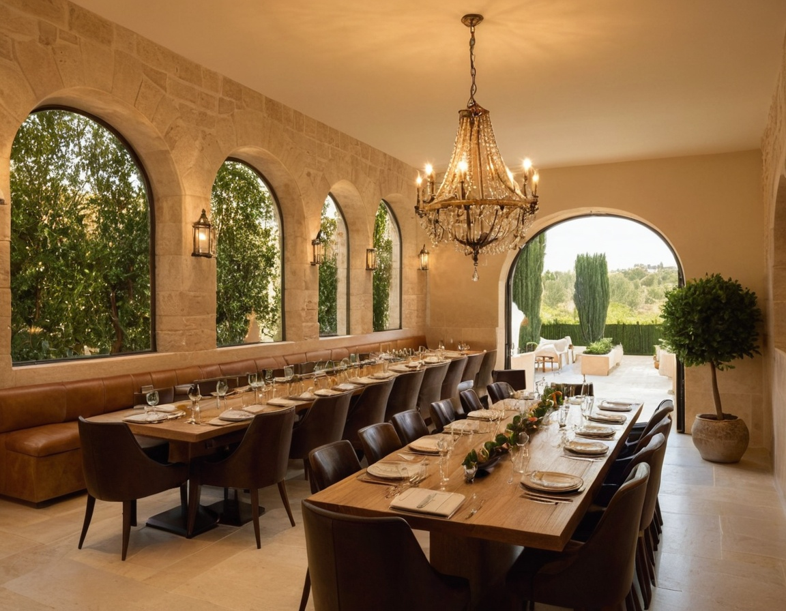
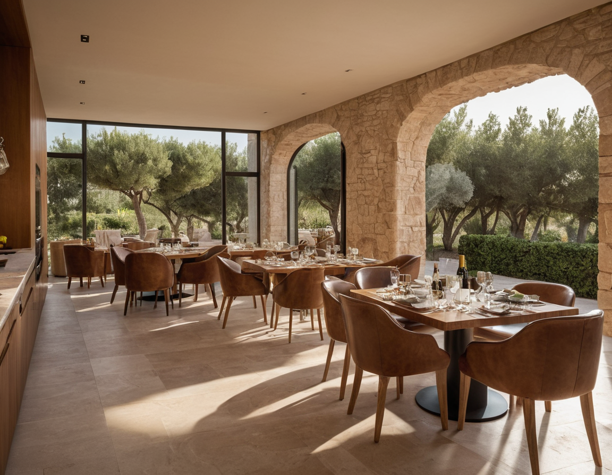
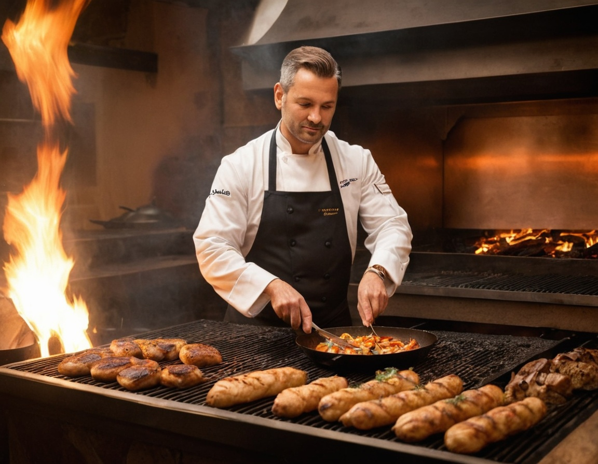
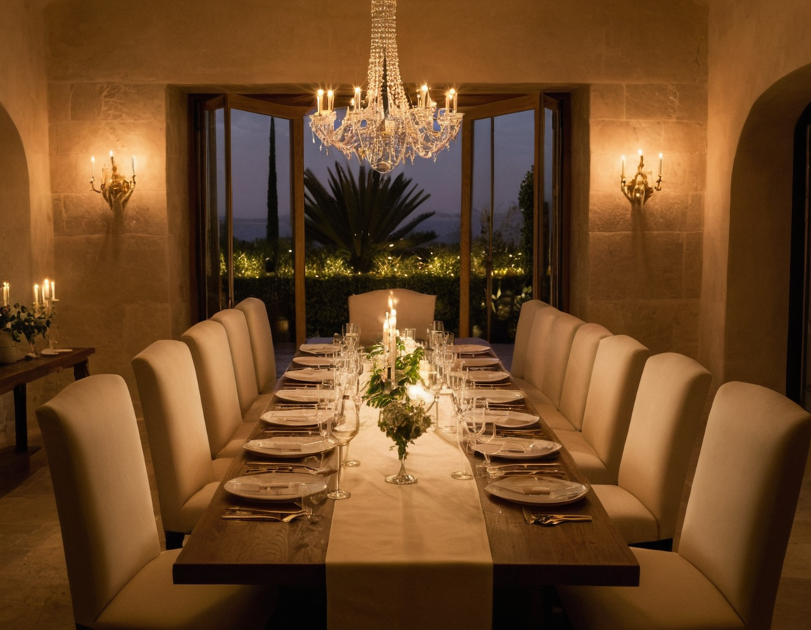
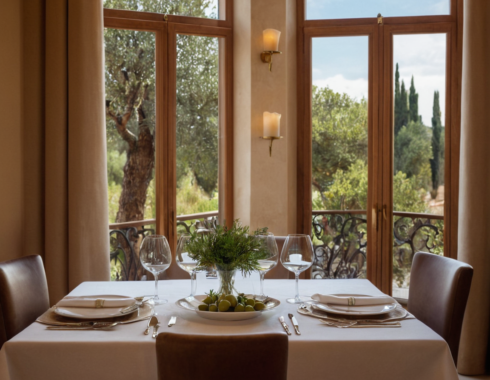
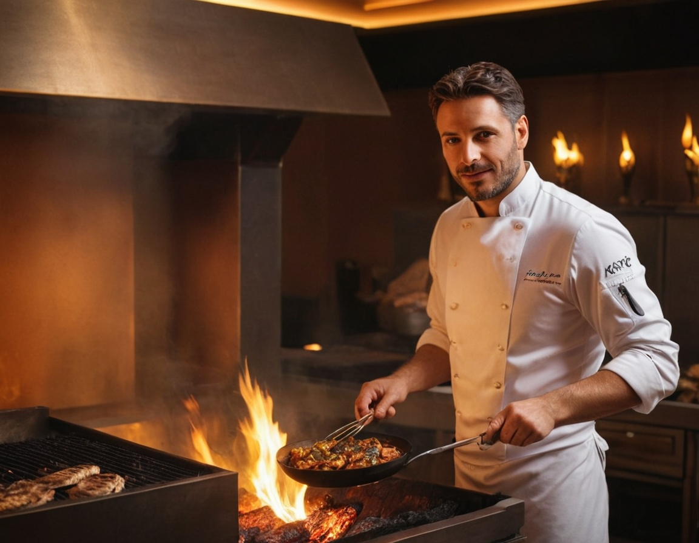
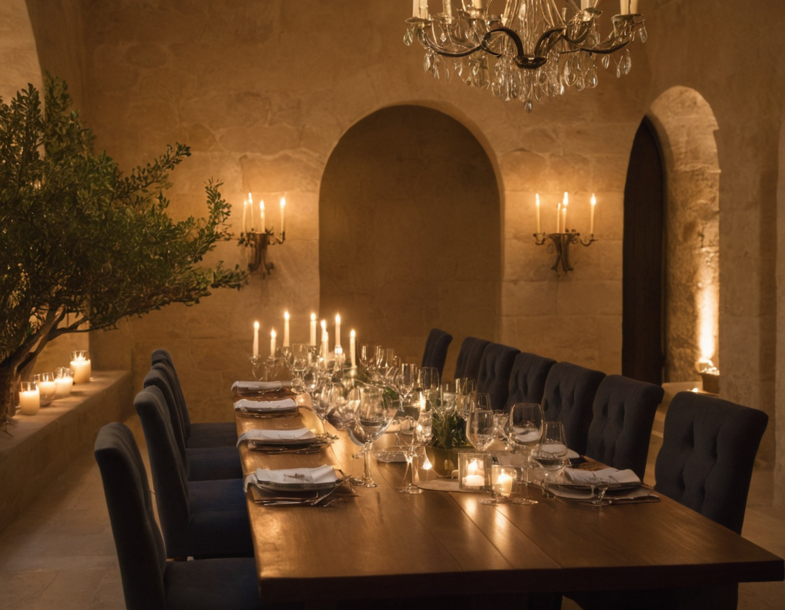
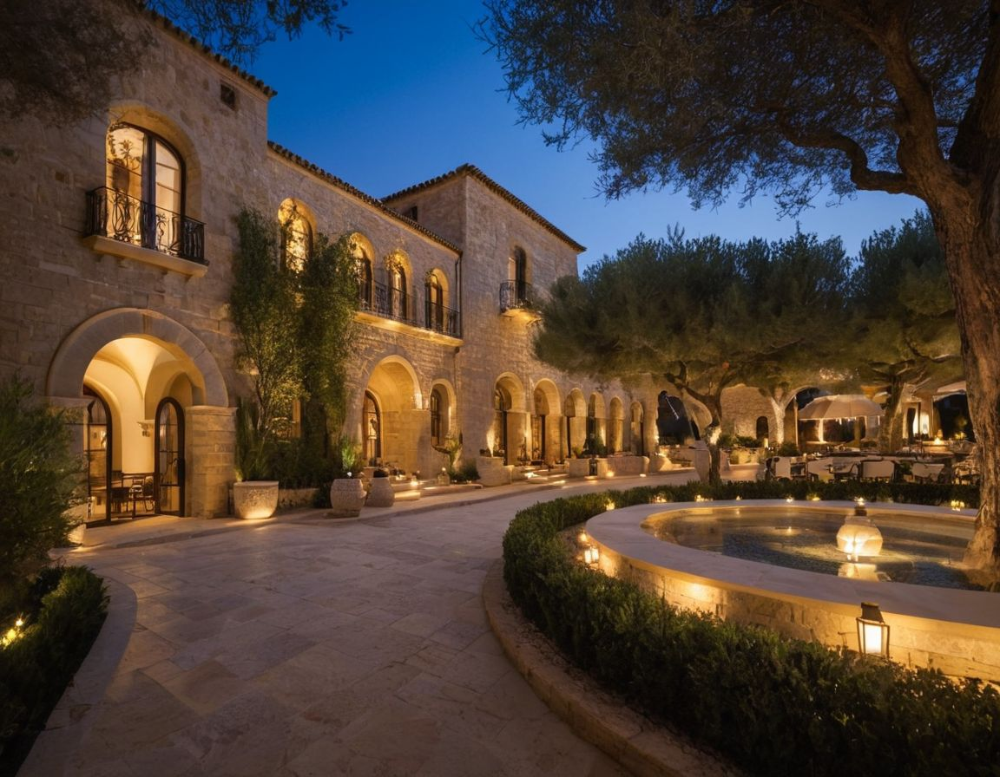

Dinner under the arches
Een architecturale eetzaal met lange zichtlijnen, rustige tafelschikking en service per gang.

Avonden die ruiken naar houtvuur, citrus en zeezout horen niet gehaast te zijn.
Bij Casa Solea draait gastvrijheid om ritme. De tafel vult zich langzaam met seizoensproducten, gegrilde groente, vis uit mediterrane wateren en wijn die gemaakt is om te delen.
Open vuur, lange gesprekken en zachte muziek vormen de structuur van de avond. Deze pagina is een fictieve demo-ervaring voor Lorenzo Web Solutions.

Ervaring
Elke beleving heeft een eigen tempo: onder de bogen, aan de chef's table en tijdens wijnavonden rond de Middellandse Zee.

Een architecturale eetzaal met lange zichtlijnen, rustige tafelschikking en service per gang.

Een kleine tafel aan de open keuken waar elke gang wordt afgewerkt in direct zicht op het vuur.

Wijnregio's, kleine borden en begeleide pairings maken van de avond een redactioneel menu in hoofdstukken.

Avonden die langer mogen duren.

De chef
Matteo groeide op tussen kustkeukens in Valencia en Palermo en werkt met een sobere filosofie: vuur, zout, zuur en tijd. Zijn stijl is direct en seizoensgebonden, met nadruk op producten van kleine producenten.
"Een gerecht moet spreken in lagen, niet in volume."

Private dining
Voor zakelijke diners, familievieringen en chef's table-avonden ontvangen we groepen van 10 tot 36 gasten in een afgescheiden setting met eigen service.
Wijn en seizoen
Strakke zuren bij zeevruchten en gegrilde groenten.
Asperge, citroen, jonge kruiden en lichte roodfruitwijnen.
Fermentaties, verjus en kruidige infusies als volwaardig traject.
Wisselende flights met herkomstverhaal per glas.
Reservatie
Deze demo toont lokale validatie en een demonstratieve bevestiging zonder live verzending.
Locatie
